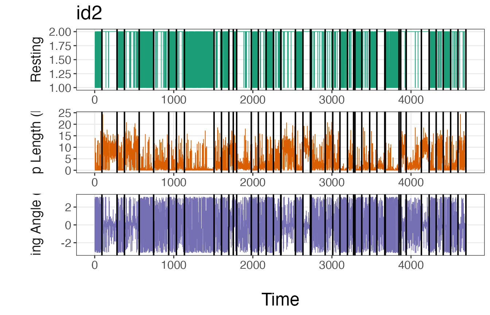
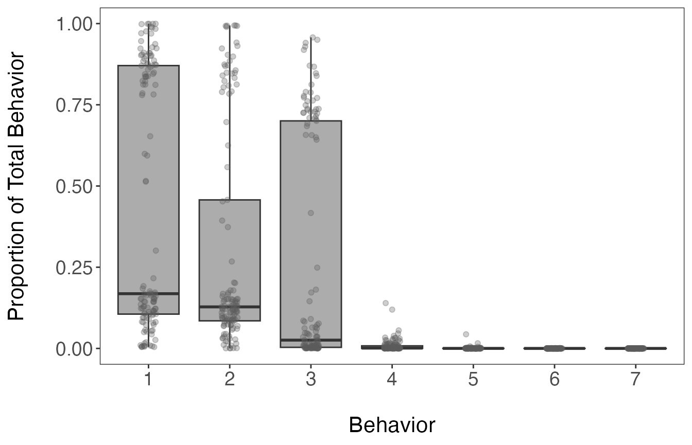

Pre-specifying breakpoints and dealing with zero-inflated variables
18 August 2023
Source:vignettes/Pre-specify_brkpts_and_zero-inflated_data.Rmd
Pre-specify_brkpts_and_zero-inflated_data.RmdIntroduction
There may be instances where the dataset of interest has structure that should be accounted for by the model.
For example, devices such as Argos satellite tags on air-breathing marine megafauna may have a variable denoting that the animal has “hauled-out”, meaning that they’re on land. This is particularly common for different seal species, as well as nesting sea turtles. In a similar vein, terrestrial some terrestrial species may go into underground burrows each day to rest, which may be denoted by the loss of a GPS signal until the animal re-emerges. Researchers may also just be interested in the diel patterns of movement exhibited by many species.
Pre-specification of breakpoints
Each of these examples demonstrates a priori knowledge about the species of interest or the inclusion of a variable denoting a specific behavior can be associated with a particular behavior. This knowledge can be directly leveraged by the model that segments the tracks and then clusters them into behavioral states by allowing users to pre-specify breakpoints. These pre-specified breakpoints are then supplied when running the segmentation model and the reversible-jump Markov chain Monte Carlo algorithm considers whether to keep them, shift them over, or delete them altogether. In some cases, this can dramatically speed up time to convergence for the Bayesian model. It is worth noting that the model may remove nearly all of the pre-specified breakpoints. In these instances, a number of things may be going wrong: 1) there are too many missing values (NAs) in the data streams, 2) the bins do not characterize the data streams well, and 3) the method or variable used to define the pre-specified breakpoints does not identify any underlying structure in the data streams being analyzed.
Handling of zero-inflated data streams
Another characteristic of some data streams included for analysis are zero-inflated data streams. This means that certain variables have a high number of zeroes with respect to other real numbers or integers. The segmentation-clustering model as well as the clustering-only model that estimates behavioral states at the observation-level can easily account for this structure in the data by lumping all zeroes of a given variable into a single bin of the discretized data stream. This also makes interpretation of the state-dependent distributions quite easy when interpreting each of the different estimated behavioral states.
Handling of missing values
While unrelated to the above topics, it is also worth mentioning that both state estimation models (segment-level or observation-level behavioral states) can handle NAs. This requires no. While there are no specific guidelines on the proportion of NA values that can be included for one or more data streams, those with greater numbers of NAs will hold less weight in influencing the estimation of breakpoints compared to those will full data streams.
A demonstration will be provided below on analyzing a dataset with a
“known” set of possible breakpoints as well as the analysis of a
zero-inflated variable using the built in tracks dataset in
the bayesmove package.
Prepare data
This tutorial works under the assumption that readers have covered the previous vignettes for the segmentation-level state estimation model since there won’t be much description on many of the steps repeated here. First, let’s load in the data and visualize some of its attributes.
library(bayesmove)
library(tidyverse)
library(future)
data(tracks)
# Check data structure
head(tracks)
#> id date x y
#> 1 id1 2020-07-02 11:59:41 0.00000 0.0000000
#> 2 id1 2020-07-02 12:58:26 10.56492 -1.6654990
#> 3 id1 2020-07-02 13:59:31 25.50174 -0.6096675
#> 4 id1 2020-07-02 15:01:27 31.22014 9.5438464
#> 5 id1 2020-07-02 15:59:56 36.15821 19.8737009
#> 6 id1 2020-07-02 16:58:38 39.06810 26.4996352
unique(tracks$id)
#> [1] "id1" "id2" "id3"
Now, let’s calculate step length, turning angle, net-squared displacement, and time step:
tracks<- prep_data(dat = tracks, coord.names = c("x","y"), id = "id")
head(tracks)
#> id date x y step angle NSD dt
#> 1 id1 2020-07-02 11:59:41 0.00000 0.0000000 10.695 NA 0.000 3526
#> 2 id1 2020-07-02 12:58:26 10.56492 -1.6654990 14.974 0.227 114.392 3664
#> 3 id1 2020-07-02 13:59:31 25.50174 -0.6096675 11.653 0.987 650.710 3716
#> 4 id1 2020-07-02 15:01:27 31.22014 9.5438464 11.449 0.067 1065.782 3509
#> 5 id1 2020-07-02 15:59:56 36.15821 19.8737009 7.237 0.032 1702.380 3522
#> 6 id1 2020-07-02 16:58:38 39.06810 26.4996352 0.119 -2.804 2228.547 3738Next, we will round time steps (and dates) to a specified interval (1 h; 3600 s) if within 3 minutes (180 s) of this interval.
tracks<- round_track_time(dat = tracks, id = "id", int = 3600, tol = 180, time.zone = "UTC",
units = "secs")
head(tracks)
#> id date x y step angle NSD dt
#> 1 id1 2020-07-02 11:59:41 0.00000 0.0000000 10.695 NA 0.000 3600
#> 2 id1 2020-07-02 12:59:41 10.56492 -1.6654990 14.974 0.227 114.392 3600
#> 3 id1 2020-07-02 13:59:41 25.50174 -0.6096675 11.653 0.987 650.710 3600
#> 4 id1 2020-07-02 14:59:41 31.22014 9.5438464 11.449 0.067 1065.782 3600
#> 5 id1 2020-07-02 15:59:41 36.15821 19.8737009 7.237 0.032 1702.380 3600
#> 6 id1 2020-07-02 16:59:41 39.06810 26.4996352 0.119 -2.804 2228.547 3600Artificially define ‘resting’ behavior
To demonstrate how to pre-specify breakpoints, I will be creating a synthetic variable that denotes a ‘resting’ behavioral state based on the step length variable. A step like this one in the creation of a derived variable may or may not be necessary for your particular dataset. In this case, I will find the lower quartile of step lengths and use this as the threshold to define the ‘resting’ behavior.
quantile(tracks$step, 0.25, na.rm = T)
#> 25%
#> 0.106Across all three tracks, the lower quartile is almost exactly 0.1, so
this will be the value used as the threshold for a resting vs not
resting state. Additionally, I will change all step length values below
this threshold to zero in order to artificially increase the zeroes in
this datastream. The following code demonstrates how I do this and
create the new binary variable denoting resting from non-resting
observations. Since each of the state estimation models requires the
analysis of discretized variables denoted by positive integers, I will
create a binary rest variable that is denoted by 1 (“rest”)
and 2 (“non-rest”) rather than 0 and 1.
tracks <- tracks %>%
mutate(step = case_when(step <= 0.1 ~ 0,
step > 0.1 ~ step)
) %>%
mutate(rest = case_when(step > 0.1 ~ 2,
step == 0 ~ 1)
)Next, the data need to be reformatted as a list where each element is
a different individual track. As a list object, the data
will then be filtered to only retain observations at a 1 hr (3600 s)
time interval.
# Create list from data frame
tracks.list<- df_to_list(dat = tracks, ind = "id")
# Filter observations
tracks_filt.list<- filter_time(dat.list = tracks.list, int = 3600)Discretize data streams
Before the data streams can be analyzed by the model, they must first be discretized into bins. Further details are provided in the Prepare data for analysis and Cluster observations vignettes. Since the ‘rest’ variable is binary and has already been coded as a 1 or 2, it is already technically discretized. So the remainder of the work needs to be done on the other two data streams included in this analysis, the step lengths and turning angles.
# Define bin number and limits for turning angles
angle.bin.lims=seq(from=-pi, to=pi, by=pi/4) #8 bins
# Define bin number and limits for step lengths
dist.bin.lims=quantile(tracks[tracks$dt == 3600,]$step,
c(0,0.25,0.50,0.75,0.90,1), na.rm=T) #5 bins
angle.bin.lims
#> [1] -3.1415927 -2.3561945 -1.5707963 -0.7853982 0.0000000 0.7853982 1.5707963
#> [8] 2.3561945 3.1415927
dist.bin.lims
#> 0% 25% 50% 75% 90% 100%
#> 0.00000 0.10700 1.27900 5.73825 10.75250 25.25200
# Assign bins to observations
tracks_disc.list<- map(tracks_filt.list,
discrete_move_var,
lims = list(dist.bin.lims, angle.bin.lims),
varIn = c("step", "angle"),
varOut = c("SL", "TA"))Now that we have two new columns in the dataset representing the discretized step lengths (SL) and turning angles (TA), we need to create a 6th bin for step lengths to hold all of the zeroes. This is because they are currently all stored within the first bin with other non-zero values.
# Since 0s get lumped into bin 1 for SL, need to add a 6th bin to store only 0s
tracks_disc.list2 <- tracks_disc.list %>%
map(., ~mutate(.x, SL = SL + 1)) %>% #to shift bins over from 1-5 to 2-6
map(., ~mutate(.x, SL = case_when(step == 0 ~ 1, #assign 0s to bin 1
step != 0 ~ SL) #otherwise keep the modified SL bin
))Segment the tracks
With the newly discretized data streams, the tracks can now be analyzed by the segmentation model. However, we still have yet to pre-sepcify the breakpoints.
Pre-specify breakpoints
To pre-specify breakpoints, users will apply the
find_breaks() function. In its standard form, this function
can only be applied to one track at a time, so we will use
purrr::map() to map this function across each of the list
elements (i.e. different tracks). We also need to supply a character
vector to the argument ind, which indicates the column name
on which we would like to identify possible breakpoints. This function
only works on discrete variables (i.e., integers), so users will need to
potentially modify the variable supplied or modify this function to meet
the needs of their data. If pre-specifying breakpoints for dates to
denote diel patterns, users could potentially apply this function to the
day-of-year or Julian day.
Since the pre-specified breakpoints must be supplied to the model as
a list, the resulting breaks object shows how
these potential breakpoints should be stored.
# Only retain id, discretized step length (SL), turning angle (TA), and rest columns
tracks.list2<- map(tracks_disc.list2,
subset,
select = c(id, SL, TA, rest))
# Pre-specify breakpoints based on 'rest'
breaks<- map(tracks.list2, ~find_breaks(dat = ., ind = "rest"))Run the segmentation model
set.seed(1)
# Define hyperparameter for prior distribution
alpha<- 1
# Set number of iterations for the Gibbs sampler
ngibbs<- 50000
# Set the number of bins used to discretize each data stream
nbins<- c(6,8,2) #SL, TA, rest (in the order from left to right in tracks.list2)
progressr::handlers(progressr::handler_progress(clear = FALSE))
future::plan(future::multisession, workers = 3) #run all MCMC chains in parallel
#refer to future::plan() for more details
dat.res<- segment_behavior(data = tracks.list2, ngibbs = ngibbs, nbins = nbins,
alpha = alpha, breakpt = breaks)
#> 52.259 sec elapsed
# takes 1.5 min to run
future::plan(future::sequential) #return to single coreBefore we proceed further with these estimated breakpoints from the model, let’s check that it has converged first by inspecting traceplots of the log marginal likelihood and the number of breakpoints.
# Trace-plots for the number of breakpoints per ID
traceplot(data = dat.res, type = "nbrks")
# Trace-plots for the log marginal likelihood (LML) per ID
traceplot(data = dat.res, type = "LML")
#both plots appear to indicate convergence to posteriorEverything looks good from the traceplots, so now let’s identify the maximum a posteriori (MAP) estimate that we’ll use in the next step.
## Determine MAP for selecting breakpoints
MAP.est<- get_MAP(dat = dat.res$LML, nburn = 25000)
MAP.est
#> [1] 32049 34861 26213
brkpts<- get_breakpts(dat = dat.res$brkpts, MAP.est = MAP.est)
# How many breakpoints estimated per ID?
apply(brkpts[,-1], 1, function(x) length(purrr::discard(x, is.na)))
#> id1 id2 id3
#> 37 45 40Another good visual diagnostic to check how well the model is able to identify major breakpoints consistent with a user’s a priori knowledge is to plot the breakpoints over the analyzed data streams.
plot_breakpoints(data = tracks_disc.list2, as_date = FALSE, var_names = c("step","angle","rest"),
var_labels = c("Step Length (km)", "Turning Angle (rad)", "Resting"), brkpts = brkpts)
If these plots match up with intuition, then it is safe to move forward with the estimated breakpoints. If the number or location of these breakpoints deviate from expectations, it may be necessary to run the model again with a greater number of iterations or using a different method to discretize the data streams.
Assign track segments to tracks
With the modeled breakpoints, users will need to assign track segment
numbers to each individual. This is performed using the
assign_tseg() function.
tracks.seg<- assign_tseg(dat = tracks_disc.list2, brkpts = brkpts)
head(tracks.seg)
#> id date x y step angle NSD dt rest
#> 1 id1 2020-07-02 11:59:41 0.00000 0.0000000 10.695 NA 0.000 3600 2
#> 2 id1 2020-07-02 12:59:41 10.56492 -1.6654990 14.974 0.227 114.392 3600 2
#> 3 id1 2020-07-02 13:59:41 25.50174 -0.6096675 11.653 0.987 650.710 3600 2
#> 4 id1 2020-07-02 14:59:41 31.22014 9.5438464 11.449 0.067 1065.782 3600 2
#> 5 id1 2020-07-02 15:59:41 36.15821 19.8737009 7.237 0.032 1702.380 3600 2
#> 6 id1 2020-07-02 16:59:41 39.06810 26.4996352 0.119 -2.804 2228.547 3600 2
#> obs time1 SL TA tseg
#> 1 1 1 5 NA 1
#> 2 2 2 6 5 1
#> 3 3 3 6 6 1
#> 4 4 4 6 5 1
#> 5 5 5 5 5 1
#> 6 6 6 3 1 1Cluster the segments
With track segments now denoted from the segmentation model, the next
step is to cluster these segments together into behavioral states using
Latent Dirichlet Allocation (LDA) using the
cluster_segments() function. But first, we need to count
the number of observations per segment that belong in each of the
discretized bins.
# Select only id, tseg, SL, TA, and rest columns
tracks.seg2<- tracks.seg[,c("id","tseg","SL","TA","rest")]
# Summarize observations by track segment
nbins<- c(6,8,2)
obs<- summarize_tsegs(dat = tracks.seg2, nbins = nbins)
head(obs)
#> id tseg y1.1 y1.2 y1.3 y1.4 y1.5 y1.6 y2.1 y2.2 y2.3 y2.4 y2.5 y2.6 y2.7
#> 1 id1 1 4 0 7 13 44 24 7 4 1 26 38 7 0
#> 2 id1 2 53 0 24 8 6 1 40 7 3 3 3 5 5
#> 3 id1 3 9 0 6 10 34 27 5 5 4 39 22 4 1
#> 4 id1 4 0 0 2 4 3 1 1 0 1 1 2 3 0
#> 5 id1 5 50 0 28 8 6 3 33 9 2 6 4 2 8
#> 6 id1 6 0 0 0 1 0 0 0 0 1 0 0 0 0
#> y2.8 y3.1 y3.2
#> 1 8 4 88
#> 2 26 53 39
#> 3 6 9 77
#> 4 2 0 10
#> 5 31 50 45
#> 6 0 0 1Run the clustering model
set.seed(1)
# Prepare for Gibbs sampler
ngibbs<- 1000 #number of MCMC iterations for Gibbs sampler
nburn<- ngibbs/2 #number of iterations for burn-in
nmaxclust<- max(nbins) - 1 #one fewer than max number of bins used for data streams
ndata.types<- length(nbins) #number of data types
# Priors
gamma1<- 0.1
alpha<- 0.1
# Run LDA model
res<- cluster_segments(dat=obs, gamma1=gamma1, alpha=alpha,
ngibbs=ngibbs, nmaxclust=nmaxclust,
nburn=nburn, ndata.types=ndata.types)Again, let’s check the traceplot of the log likelihood to check if the LDA clustering model converged on the posterior distribution.
plot(res$loglikel, type='l', xlab = "Iteration", ylab = "Log Likelihood")
#LDA appears to have convergedDetermine the number of likely states
To determine the number of likely states estimated by the model, we’ll need to inspect the results from the \(\theta\) parameter. This is a matrix that stores the probability of a segment belonging to a particular behavioral state. We will try to select the fewest number of states that account for \(\ge 90\%\) of all observations.
# Extract proportions of behaviors per track segment
theta.estim<- extract_prop(res = res, ngibbs = ngibbs, nburn = nburn, nmaxclust = nmaxclust)
# Calculate mean proportions per behavior
(theta.means<- round(colMeans(theta.estim), digits = 3))
#> [1] 0.439 0.298 0.254 0.008 0.001 0.000 0.000
# Calculate cumulative sum
cumsum(theta.means)
#> [1] 0.439 0.737 0.991 0.999 1.000 1.000 1.000
#first 3 states comprise 99.1% of all observations
# Convert to data frame for ggplot2
theta.estim_df<- theta.estim %>%
as.data.frame() %>%
pivot_longer(., cols = 1:all_of(nmaxclust), names_to = "behavior", values_to = "prop") %>%
modify_at("behavior", factor)
levels(theta.estim_df$behavior)<- 1:nmaxclust
# Plot results
ggplot(theta.estim_df, aes(behavior, prop)) +
geom_boxplot(fill = "grey35", alpha = 0.5, outlier.shape = NA) +
geom_jitter(color = "grey35", position = position_jitter(0.1),
alpha = 0.3) +
labs(x="\nBehavior", y="Proportion of Total Behavior\n") +
theme_bw() +
theme(panel.grid = element_blank(),
axis.title = element_text(size = 16),
axis.text = element_text(size = 14))
The inspection of the mean proportions of behavioral states stored in
the theta.estim object shows that the first 3 states are
attributed to 99.1% of observations. All of the estimates per segment
and behavioral state are shown in the above boxplot.
Classify the states as behaviors
Now that it appears that 3 states are likely present in this dataset,
we need to extract the state-dependent distributions from the \(\phi\) matrix using the
get_behav_hist() function. By visualizing these
distributions, we can verify the findings determined using the \(\theta\) matrix and assign names to the
states based on the shape of the state-dependent distributions. Below,
only the retained states have distributions shown in color. The
remaining 4 states are included to demonstrate that they are not
biologically interpretable by comparison.
# Extract bin estimates from phi matrix
behav.res<- get_behav_hist(dat = res, nburn = nburn, ngibbs = ngibbs, nmaxclust = nmaxclust,
var.names = c("Step Length","Turning Angle","Resting"))
# Plot histograms of proportion data
ggplot(behav.res, aes(x = bin, y = prop, fill = as.factor(behav))) +
geom_bar(stat = 'identity') +
labs(x = "\nBin", y = "Proportion\n") +
theme_bw() +
theme(axis.title = element_text(size = 16),
axis.text.y = element_text(size = 14),
axis.text.x.bottom = element_text(size = 12),
strip.text = element_text(size = 14),
strip.text.x = element_text(face = "bold")) +
scale_fill_manual(values = c("#21908CFF","#440154FF","#FDE725FF",
"grey35","grey35","grey35","grey35"), guide = "none") +
scale_y_continuous(breaks = c(0.00, 0.50, 1.00)) +
scale_x_continuous(breaks = 1:8) +
facet_grid(behav ~ var, scales = "free_x")From the above plot, it appears that state 1 has a high number of resting observations (bin 1 of Resting), short step lengths (primarily zero as exemplified by the high proportion in bin 1), and high turning angles (near \(\pi\) or \(-\pi\)). Given these distributions, I will call state 1 ‘Resting’. States 2 and 3 have zero observations with resting behavior, but state 2 has larger step lengths and turning angles closer to zero, indicating relatively straight movements. Therefore state 2 will be called ‘Transit’ and state 3 will be called ‘Exploratory’.
Since each segment is defined as a mixture of the different behavioral states, we will need to assign these proportions back to our dataset. These proportions can also be visualized over time.
# Reformat proportion estimates for all track segments
theta.estim.long<- expand_behavior(dat = tracks.seg, theta.estim = theta.estim, obs = obs,
nbehav = 3, behav.names = c("Resting", "Transit", "Exploratory"),
behav.order = c(1,3,2))
# Plot results
ggplot(theta.estim.long) +
geom_area(aes(x=date, y=prop, fill = behavior), color = "black", linewidth = 0.25,
position = "fill") +
labs(x = "\nTime", y = "Proportion of Behavior\n") +
scale_fill_viridis_d("Behavior") +
theme_bw() +
theme(axis.title = element_text(size = 16),
axis.text.y = element_text(size = 14),
axis.text.x.bottom = element_text(size = 12),
strip.text = element_text(size = 14, face = "bold"),
panel.grid = element_blank()) +
facet_wrap(~id, nrow = 3)Assign behavioral states to tracks
The last major step is to now assign the behavioral states back to the original tracks. More specifically, the proportion of each behavioral state assigned to each track segment will be associated with all observations in that particular track segment. When mapping these results, users can either plot the dominant behavior per observation or potentially the proportion associated with a given behavioral state of interest.
# Merge results with original data
tracks.out<- assign_behavior(dat.orig = tracks,
dat.seg.list = df_to_list(tracks.seg, "id"),
theta.estim.long = theta.estim.long,
behav.names = c("Resting","Exploratory","Transit"))
# Map dominant behavior for all IDs
ggplot() +
geom_path(data = tracks.out, aes(x=x, y=y), color="gray60", linewidth=0.25) +
geom_point(data = tracks.out, aes(x, y, fill=behav), size=1.5, pch=21, alpha=0.7) +
geom_point(data = tracks.out %>%
group_by(id) %>%
slice(which(row_number() == 1)) %>%
ungroup(), aes(x, y), color = "green", pch = 21, size = 3, stroke = 1.25) +
geom_point(data = tracks.out %>%
group_by(id) %>%
slice(which(row_number() == n())) %>%
ungroup(), aes(x, y), color = "red", pch = 24, size = 3, stroke = 1.25) +
scale_fill_viridis_d("Behavior", na.value = "grey50") +
labs(x = "Easting", y = "Northing") +
theme_bw() +
theme(axis.title = element_text(size = 16),
strip.text = element_text(size = 14, face = "bold"),
panel.grid = element_blank()) +
guides(fill = guide_legend(label.theme = element_text(size = 12),
title.theme = element_text(size = 14))) +
facet_wrap(~id, scales = "free", ncol = 2)
# Map of all IDs
ggplot() +
geom_path(data = tracks.out, aes(x, y, color = behav, group = id), linewidth=0.5) +
geom_point(data = tracks.out %>%
group_by(id) %>%
slice(which(row_number() == 1)) %>%
ungroup(), aes(x, y), color = "green", pch = 21, size = 3, stroke = 1.25) +
geom_point(data = tracks.out %>%
group_by(id) %>%
slice(which(row_number() == n())) %>%
ungroup(), aes(x, y), color = "red", pch = 24, size = 3, stroke = 1.25) +
scale_color_viridis_d("Behavior", na.value = "grey50") +
labs(x = "Easting", y = "Northing") +
theme_bw() +
theme(axis.title = element_text(size = 16),
strip.text = element_text(size = 14, face = "bold"),
legend.text = element_text(size = 12),
legend.title = element_text(size = 14))
# Proportion resting
ggplot() +
geom_path(data = tracks.out, aes(x, y, color = Resting, group = id),
linewidth=0.5, alpha=0.7) +
geom_point(data = tracks.out %>%
slice(which(row_number() == 1)),
aes(x, y), color = "green", pch = 21, size = 3, stroke = 1.25) +
geom_point(data = tracks.out %>%
slice(which(row_number() == n())),
aes(x, y), color = "red", pch = 24, size = 3, stroke = 1.25) +
scale_color_distiller("Proportion\nResting", palette = "Spectral", na.value = "grey50") +
labs(x = "Easting", y = "Northing", title = "Resting") +
theme_bw() +
theme(axis.title = element_text(size = 16),
strip.text = element_text(size = 14, face = "bold"),
panel.grid = element_blank(),
legend.text = element_text(size = 12),
legend.title = element_text(size = 14))
# Proportion exploratory
ggplot() +
geom_path(data = tracks.out, aes(x, y, color = Exploratory, group = id),
linewidth=0.5, alpha=0.7) +
geom_point(data = tracks.out %>%
slice(which(row_number() == 1)),
aes(x, y), color = "green", pch = 21, size = 3, stroke = 1.25) +
geom_point(data = tracks.out %>%
slice(which(row_number() == n())),
aes(x, y), color = "red", pch = 24, size = 3, stroke = 1.25) +
scale_color_distiller("Proportion\nExploratory", palette = "Spectral", na.value = "grey50") +
labs(x = "Easting", y = "Northing", title = "Exploratory") +
theme_bw() +
theme(axis.title = element_text(size = 16),
strip.text = element_text(size = 14, face = "bold"),
panel.grid = element_blank(),
legend.text = element_text(size = 12),
legend.title = element_text(size = 14))
# Proportion transit
ggplot() +
geom_path(data = tracks.out, aes(x, y, color = Transit, group = id),
linewidth=0.5, alpha=0.7) +
geom_point(data = tracks.out %>%
slice(which(row_number() == 1)),
aes(x, y), color = "green", pch = 21, size = 3, stroke = 1.25) +
geom_point(data = tracks.out %>%
slice(which(row_number() == n())),
aes(x, y), color = "red", pch = 24, size = 3, stroke = 1.25) +
scale_color_distiller("Proportion\nTransit", palette = "Spectral", na.value = "grey50") +
labs(x = "Easting", y = "Northing", title = "Transit") +
theme_bw() +
theme(axis.title = element_text(size = 16),
strip.text = element_text(size = 14, face = "bold"),
panel.grid = element_blank(),
legend.text = element_text(size = 12),
legend.title = element_text(size = 14))